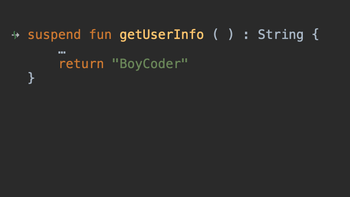
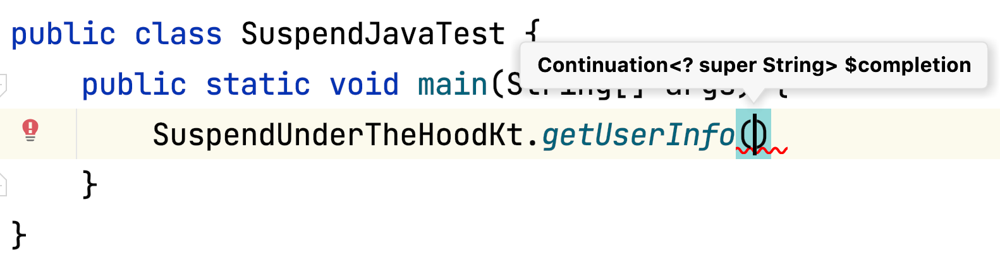
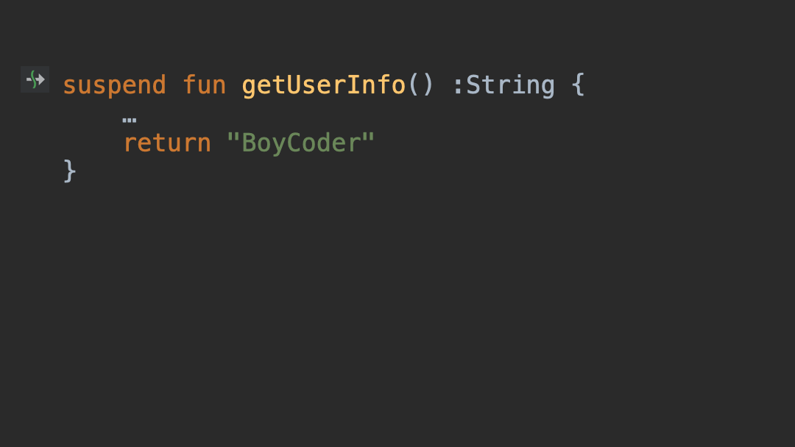
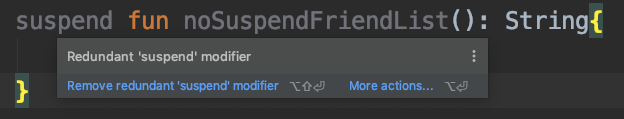

Audio图解挂起函数：原来你就是个状态机？
你好，我是朱涛。今天我们来研究 Kotlin 挂起函数的实现原理。
挂起函数，是整个 Kotlin 协程的核心，它的重要性不言而喻。几乎所有协程里的知识点，都离不开挂起函数。而且也正是因为挂起函数的原因，我们才可以使用协程简化异步任务。
今天这节课，我会从这个 CPS 转换开始说起，带你进一步挖掘它背后的细节。在这个过程中，我们还会接触到 Kotlin 库当中的协程基础元素：Continuation、CoroutineContext 与挂起函数的底层联系。最后，我会带你灵活运用下这些知识点，以此进一步完善我们的 KtHttp，让它可以直接支持挂起函数。
好，接下来，我们就正式开始吧！
CPS 转换背后的细节
在第 15 讲当中，我们已经初步介绍过挂起函数的用法了：挂起函数，只是比普通的函数多了 suspend 关键字。有了这个 suspend 关键字以后，Kotlin 编译器就会特殊对待这个函数，将其转换成一个带有 Callback 的函数，这里的 Callback 就是 Continuation 接口。
而这个过程，我们称之为 CPS 转换：

以上的 CPS 转换过程中，函数的类型发生了变化：suspend ()->String 变成了 (Continuation)-> Any?。这意味着，如果你在 Java 里访问一个 Kotlin 挂起函数 getUserInfo()，会看到 getUserInfo() 的类型是 (Continuation)-> Object，也就是：接收 Continuation 为参数，返回值是 Object。
而在这里，函数签名的变化可以分为两个部分：函数参数的变化和函数返回值的变化。
CPS 参数变化
我们先来看函数参数的变化，suspend() 变成 (Continuation) 的情况，这里我们以第 15 讲当中的代码为例：
// 代码段1
suspend fun testCoroutine() {
val user = getUserInfo()
val friendList = getFriendList(user)
val feedList = getFeedList(user, friendList)
log(feedList)
}
//挂起函数
// ↓
suspend fun getUserInfo(): String {
withContext(Dispatchers.IO) {
delay(1000L)
}
return "BoyCoder"
}
//挂起函数
// ↓
suspend fun getFriendList(user: String): String {
withContext(Dispatchers.IO) {
delay(1000L)
}
return "Tom, Jack"
}
//挂起函数
// ↓
suspend fun getFeedList(user: String, list: String): String {
withContext(Dispatchers.IO) {
delay(1000L)
}
return "{FeedList..}"
}上面这段代码，testCoroutine() 是一个挂起函数，它的内部依次调用了三个挂起函数。而如果我们从 Java 的角度来看待 testCoroutine() 的话，代码中所有的参数都会发生变化。如下所示：
// 代码段2
// 变化在这里
// ↓
fun testCoroutine(continuation: Continuation): Any? {
// 变化在这里
// ↓
val user = getUserInfo(continuation)
// 变化在这里
// ↓
val friendList = getFriendList(user, continuation)
// 变化在这里
// ↓
val feedList = getFeedList(friendList, continuation)
log(feedList)
}可见，在这里的 testCoroutine() 当中，每一次函数调用的时候，continuation 都会作为最后一个参数传到挂起函数里。不过这一步是 Kotlin 编译器帮我们做的，我们开发者是无感知的。还记得第 15 讲我留下的思考题吗：为什么挂起函数可以调用挂起函数，普通函数则不能？
其实，这个问题的答案，我们从代码段 2 就可以看出来。请想象一下，如果 testCoroutine() 只是一个普通函数，那它就不会有 continuation 这个参数了，这样 getUserInfo()、getFriendList()、getFeedList() 这几个挂起函数自然也就无法被调用了。
CPS 返回值变化
好，接下来我们看看 getUserInfo() 的返回值类型的变化：
// 代码段3
suspend fun getUserInfo(): String {}
// 变化在这里
// ↓
fun getUserInfo(cont: Continuation): Any? {}从上面的代码里，可以看到 getUserInfo() 的返回值类型从 String 变成“Any?”。你肯定会好奇，函数原本的 String 返回值难道丢失了吗？如果原本的返回值类型丢失了，那么程序执行难道不会出问题吗？
其实并不是这样。Kotlin 官方之所以要弄这一套 CPS 转换规则，它必然是“等价转换”。也就是说，String 这个原本的返回值类型肯定不会消失，而是会换一种形式存在。只是 String 存在的形式，经过 Kotlin反编译成 Java 之后会丢失。如果你直接在 Java 当中调用 getUserInfo() 的话，就会发现 String 这个返回值类型成为了 Continuation 的泛型类型。

所以，对于 getUserInfo() 这个方法，经过 CPS 转换后，它完整的函数签名应该是这样的：
// 代码段4
suspend fun getUserInfo(): String {}
// 变化在这里
// ↓
fun getUserInfo(cont: Continuation<String>): Any? {}这时候，我们就可以更新第 15 讲当中的那个 CPS 动图了：

好，现在我们知道了，挂起函数原本的返回值类型 String 只是挪了个地方，所以，Kotlin 编译器的 CPS 转换仍然是等价的转换。也就是：suspend () -> String 转换成 (Continuation<String>) -> Any?。不过，这里的“Any?”又是干什么的呢？
其实，挂起函数经过 CPS 转换后，它的返回值有一个重要作用：标志该挂起函数有没有被挂起。这听起来有点绕：挂起函数，就是可以被挂起的函数，它还能不被挂起吗？
是的，挂起函数也能不被挂起。
让我们来理清几个概念。只要有 suspend 修饰的函数，它就是挂起函数，比如我们前面的例子：
// 代码段5
suspend fun getUserInfo(): String {
withContext(Dispatchers.IO) {
delay(1000L)
}
return "BoyCoder"
}当 getUserInfo() 执行到 withContext{} 的时候，就会返回 CoroutineSingletons.COROUTINE_SUSPENDED 表示函数被挂起了。
现在问题来了，请问下面这个函数是挂起函数吗？
// 代码段6
// suspend 修饰
// ↓
suspend fun noSuspendFriendList(user: String): String{
// 函数体跟普通函数一样
return "Tom, Jack"
}这个其实是 noSuspendFriendList() 方法，它的方法体跟普通函数一样。它跟一般的挂起函数有个区别：在执行的时候，它并不会被挂起，因为它就是个普通函数。当你写出以下这样的代码后，IDE 也会提示你，suspend 是多余的：

也就是，当我们调用 noSuspendFriendList() 这个挂起函数的时候，它不会真正挂起，而是会直接返回 String 类型："no suspend"。针对这样的挂起函数，你可以把它看作是伪挂起函数。
所以到这里，挂起函数经过 CPS 转换后，返回值变成“Any?”的原因也就清晰了：
由于 suspend 修饰的函数，既可能返回 CoroutineSingletons.COROUTINE_SUSPENDED，也可能返回实际结果 "no suspend"，甚至可能返回 null，为了适配所有的可能性，CPS 转换后的函数返回值类型就只能是 Any? 了。
可见我在第 15 讲当中给出的这个 CPS 动图，仅仅只是粗略模拟了协程的 CPS 流程，其中还有很多细节没有体现出来。

那么，为了让你对挂起函数的底层实现原理有一个更加清晰的认识，接下来，我们来看看挂起函数反编译之后会变成什么样。
挂起函数的反编译
我们知道，通过查看 Kotlin 反编译后的字节码，可以帮助我们理解 Kotlin 的底层原理。不过，和往常不一样的是，这次我不会直接贴反编译后的代码，因为它的逻辑比较复杂。
所以，为了方便你理解，接下来我贴出的代码是我用 Kotlin 翻译后大致等价的代码，改善了可读性，抹掉了不必要的细节。当你理解其中的思想后，再去看反编译后的 Java 代码，会更轻松一些。
好，我们进入正题，这是我们即将研究的对象，testCoroutine() 反编译前的代码：
// 代码段7
suspend fun testCoroutine() {
log("start")
val user = getUserInfo()
log(user)
val friendList = getFriendList(user)
log(friendList)
val feedList = getFeedList(friendList)
log(feedList)
}接下来我们来分析 testCoroutine() 的函数体，它相当复杂，涉及到三个挂起函数的调用。
首先，在 testCoroutine() 函数里，会多出一个 ContinuationImpl 的子类，它是整个协程挂起函数的核心。
// 代码段8
fun testCoroutine(completion: Continuation<Any?>): Any? {
// TestContinuation本质上是匿名内部类
class TestContinuation(completion: Continuation<Any?>?) : ContinuationImpl(completion) {
// 表示协程状态机当前的状态
var label: Int = 0
// 协程返回结果
var result: Any? = null
// 用于保存之前协程的计算结果
var mUser: Any? = null
var mFriendList: Any? = null
// invokeSuspend 是协程的关键
// 它最终会调用 testCoroutine(this) 开启协程状态机
// 状态机相关代码就是后面的 when 语句
// 协程的本质，可以说就是 CPS + 状态机
override fun invokeSuspend(_result: Result<Any?>): Any? {
result = _result
label = label or Int.Companion.MIN_VALUE
return testCoroutine(this)
}
}
}代码中的这个 TestContinuation 类，是 Kotlin 编译器帮我们创建的匿名内部类，这里为了方便才用的 TestContinuation 这个名称。在这个类当中定义了几个成员变量：
label 是用来代表协程状态机当中状态的；
result 是用来存储当前挂起函数执行结果的；
mUser、mFriendList 则是用来存储历史挂起函数执行结果的；
invokeSuspend 这个函数，是整个状态机的入口，它会将执行流程转交给 testCoroutine() 进行再次调用。
接下来是要判断 testCoroutine 是不是初次运行，如果是初次运行，我们就要创建一个 TestContinuation 的实例对象。
// 代码段9
// ↓
fun testCoroutine(completion: Continuation<Any?>): Any? {
...
val continuation = if (completion is TestContinuation) {
completion
} else {
// 作为参数
// ↓
TestContinuation(completion)
}
}也就是：
invokeSuspend 最终会调用 testCoroutine，然后走到这个判断语句；
如果是初次运行，会创建一个 TestContinuation 对象，completion 作为参数；
这相当于用一个新的 Continuation 包装了旧的 Continuation；
如果不是初次运行，直接将 completion 赋值给 continuation；
这说明 continuation 在整个运行期间，只会产生一个实例，这能极大地节省内存开销（对比 CallBack）。
接下来是几个变量的定义：
// 代码段10
// 三个变量，对应原函数的三个变量
lateinit var user: String
lateinit var friendList: String
lateinit var feedList: String
// result 接收协程的运行结果
var result = continuation.result
// suspendReturn 接收挂起函数的返回值
var suspendReturn: Any? = null
// CoroutineSingletons 是个枚举类
// COROUTINE_SUSPENDED 代表当前函数被挂起了
val sFlag = CoroutineSingletons.COROUTINE_SUSPENDED上面的代码，分别代表了函数当中的临时变量、挂起函数执行结果，以及是否挂起的标志位。接着，我们来看看协程状态机的核心逻辑：
// 代码段11
when (continuation.label) {
0 -> {
// 检测异常
throwOnFailure(result)
log("start")
// 将 label 置为 1，准备进入下一次状态
continuation.label = 1
// 执行 getUserInfo
suspendReturn = getUserInfo(continuation)
// 判断是否挂起
if (suspendReturn == sFlag) {
return suspendReturn
} else {
result = suspendReturn
//go to next state
}
}
1 -> {
throwOnFailure(result)
// 获取 user 值
user = result as String
log(user)
// 将协程结果存到 continuation 里
continuation.mUser = user
// 准备进入下一个状态
continuation.label = 2
// 执行 getFriendList
suspendReturn = getFriendList(user, continuation)
// 判断是否挂起
if (suspendReturn == sFlag) {
return suspendReturn
} else {
result = suspendReturn
//go to next state
}
}
2 -> {
throwOnFailure(result)
user = continuation.mUser as String
// 获取 friendList 的值
friendList = result as String
log(friendList)
// 将协程结果存到 continuation 里
continuation.mUser = user
continuation.mFriendList = friendList
// 准备进入下一个状态
continuation.label = 3
// 执行 getFeedList
suspendReturn = getFeedList(user, friendList, continuation)
// 判断是否挂起
if (suspendReturn == sFlag) {
return suspendReturn
} else {
result = suspendReturn
//go to next state
}
}
3 -> {
throwOnFailure(result)
user = continuation.mUser as String
friendList = continuation.mFriendList as String
feedList = continuation.result as String
log(feedList)
loop = false
}
}在 testCoroutine() 这个方法体当中，一共调用了三个挂起函数，这三个挂起函数把整个方法体分割成了 4 个部分，这四个部分就是上面 when 表达式当中的 4 种情况。
when 表达式实现了协程状态机；
continuation.label 是状态流转的关键，continuation.label 改变一次，就代表了挂起函数被调用了一次；
每次挂起函数执行完后，都会检查是否发生异常；
testCoroutine 里的原本的代码，被拆分到状态机里各个状态中，分开执行；
getUserInfo(continuation)、getFriendList(user, continuation)、getFeedList(friendList, continuation) 三个函数调用的是同一个 continuation 实例；
如果一个函数被挂起了，它的返回值会是 CoroutineSingletons.COROUTINE_SUSPENDED；
在挂起函数执行的过程中，状态机会把之前的结果以成员变量的方式保存在 continuation 中。
上面这一大串文字和代码看着是不是有点晕？你可以再结合着来看看这个视频演示。
00:48 / 01:57
1.0x
- 2.0x
- 1.5x
- 1.25x
- 1.0x
- 0.5x
音量
网页全屏
全屏
00:00
那到这里是不是就结束了呢？并不，因为这个动画仅演示了每个协程正常挂起的情况。如果协程并没有真正挂起呢？协程状态机会怎么运行？
协程未挂起的情况
要验证也很简单，我们将其中一个挂起函数改成伪挂起函数即可。
// 代码段12
// “伪”挂起函数
// 虽然它有 suspend 修饰，但执行的时候并不会真正挂起，因为它函数体里没有其他挂起函数
// ↓
suspend fun noSuspendFriendList(user: String): String{
return "Tom, Jack"
}
suspend fun testNoSuspend() {
log("start")
val user = getUserInfo()
log(user)
// 变化在这里
// ↓
val friendList = noSuspendFriendList(user)
log(friendList)
val feedList = getFeedList(friendList)
log(feedList)
}testNoSuspend() 这样的一个函数体，它反编译后的代码逻辑是怎么样的？
答案其实很简单，它的结构跟前面的 testCoroutine() 是一致的，只是函数名字变了而已，Kotlin 编译器 CPS 转换的逻辑只认 suspend 关键字。就算挂起函数内部并没有挂起的逻辑，Kotlin 编译器也照样会进行 CPS 转换。
// 代码段13
when (continuation.label) {
0 -> {
...
}
1 -> {
...
// 变化在这里
// ↓
suspendReturn = noSuspendFriendList(user, continuation)
// 判断是否挂起
if (suspendReturn == sFlag) {
return suspendReturn
} else {
result = suspendReturn
//go to next state
}
}
2 -> {
...
}
3 -> {
...
}
}那 testNoSuspend() 的协程状态机是怎么运行的呢？
其实我们也很容易能想到，continuation.label = 0, 2, 3 的情况都是不变的，唯独在 label = 1 的时候，suspendReturn == sFlag 这里会有区别。
具体区别我们还是通过动画来看吧：
00:32 / 00:32
1.0x
- 2.0x
- 1.5x
- 1.25x
- 1.0x
- 0.5x
音量
网页全屏
全屏
00:00
通过动画我们很清楚地看到了，对于“伪挂起函数”，suspendReturn == sFlag 是会走 else 分支的，在 else 分支里，协程状态机会直接进入下一个状态。
现在只剩最后一个问题了：
// 代码段14
if (suspendReturn == sFlag) {
} else {
// 具体代码是如何实现的？
// ↓
//go to next state
}答案其实也很简单：如果你去看协程状态机的字节码反编译后的 Java，会看到很多 label。协程状态机底层字节码，是通过 label 来实现这个 go to next state 的。由于 Kotlin 没有类似 goto 的语法，下面我用伪代码来表示 go to next state 的逻辑。
// 代码段15
// 伪代码
// Kotlin 没有这样的语法
// ↓ ↓
label: whenStart
when (continuation.label) {
0 -> {
...
}
1 -> {
...
suspendReturn = noSuspendFriendList(user, continuation)
if (suspendReturn == sFlag) {
return suspendReturn
} else {
result = suspendReturn
// 让程序跳转到 label 标记的地方
// 从而再执行一次 when 表达式
goto: whenStart
}
}
2 -> {
...
}
3 -> {
...
}
}需要注意的是：以上只是伪代码，它只是跟协程状态机字节码逻辑上“大致等价”。真实的字节码反编译出来的 Java 代码，它的可读性要差很多，也更难理解。
// 代码段16
// 看不懂也没关系，有个印象即可
@Nullable
public static final Object testCoroutine(@NotNull Continuation $completion) {
Object $continuation;
label37: {
if ($completion instanceof <TestSuspendKt$testCoroutine$1>) {
$continuation = (<TestSuspendKt$testCoroutine$1>)$completion;
if ((((<TestSuspendKt$testCoroutine$1>)$continuation).label & Integer.MIN_VALUE) != 0) {
((<TestSuspendKt$testCoroutine$1>)$continuation).label -= Integer.MIN_VALUE;
break label37;
}
}
$continuation = new ContinuationImpl($completion) {
// $FF: synthetic field
Object result;
int label;
Object L$0;
Object L$1;
@Nullable
public final Object invokeSuspend(@NotNull Object $result) {
this.result = $result;
this.label |= Integer.MIN_VALUE;
return TestSuspendKt.testCoroutine(this);
}
};
}
Object var10000;
label31: {
String user;
String friendList;
Object var6;
label30: {
Object $result = ((<TestSuspendKt$testCoroutine$1>)$continuation).result;
var6 = IntrinsicsKt.getCOROUTINE_SUSPENDED();
switch(((<TestSuspendKt$testCoroutine$1>)$continuation).label) {
case 0:
ResultKt.throwOnFailure($result);
log("start");
((<TestSuspendKt$testCoroutine$1>)$continuation).label = 1;
var10000 = getUserInfo((Continuation)$continuation);
if (var10000 == var6) {
return var6;
}
break;
case 1:
ResultKt.throwOnFailure($result);
var10000 = $result;
break;
case 2:
user = (String)((<TestSuspendKt$testCoroutine$1>)$continuation).L$0;
ResultKt.throwOnFailure($result);
var10000 = $result;
break label30;
case 3:
friendList = (String)((<TestSuspendKt$testCoroutine$1>)$continuation).L$1;
user = (String)((<TestSuspendKt$testCoroutine$1>)$continuation).L$0;
ResultKt.throwOnFailure($result);
var10000 = $result;
break label31;
default:
throw new IllegalStateException("call to 'resume' before 'invoke' with coroutine");
}
user = (String)var10000;
log(user);
((<TestSuspendKt$testCoroutine$1>)$continuation).L$0 = user;
((<TestSuspendKt$testCoroutine$1>)$continuation).label = 2;
var10000 = getFriendList(user, (Continuation)$continuation);
if (var10000 == var6) {
return var6;
}
}
friendList = (String)var10000;
log(friendList);
((<TestSuspendKt$testCoroutine$1>)$continuation).L$0 = user;
((<TestSuspendKt$testCoroutine$1>)$continuation).L$1 = friendList;
((<TestSuspendKt$testCoroutine$1>)$continuation).label = 3;
var10000 = getFeedList(friendList, (Continuation)$continuation);
if (var10000 == var6) {
return var6;
}
}
String feedList = (String)var10000;
log(feedList);
return Unit.INSTANCE;
}当然，对于上面反编译出来的 Java 代码，即使你看不懂也没关系，你只需要理解我们前面讲解的逻辑即可。本质上来说，Kotlin 协程就是通过 label 代码段嵌套，配合 switch 巧妙构造出一个状态机结构，这种逻辑比较复杂，相对难懂一些。毕竟 Java 的 label 在实际开发中用的很少。
注意：Kotlin 挂起函数反编译出来的 Java 代码，会因为实际开发环境的不同出现细微差异。随着 Kotlin 编译器的发展，将来可能会对这部分逻辑进一步优化，但它的核心状态机思想是不会轻易改变的。
好，到现在，我们就已经彻底弄懂挂起函数的实现原理了。接下来，我们就结合刚刚学习的内容，来进一步思考实战一下。
思考与实战
在上节课我曾提到过，Kotlin 协程的源代码其实分为三层，其中基础层当中的“基础概念”尤为重要。那么，Kotlin 官方为我们提供了哪些与挂起函数相关的基础元素呢？
// 代码段17
public interface Continuation<in T> {
public val context: CoroutineContext
public fun resumeWith(result: Result<T>)
}
@Suppress("WRONG_MODIFIER_TARGET")
public suspend inline val coroutineContext: CoroutineContext
get() {
throw NotImplementedError("Implemented as intrinsic")
}在上面的代码中，我们最熟悉的就是 Continuation 这个接口了，除此之外，还有一个顶层的变量值得我们注意：suspend inline val coroutineContext。要知道，我们从来都是用 suspend 修饰函数的，从未见过 suspend 修饰变量的情况。
如果我们依葫芦画瓢，创建一个类似的顶层变量的话，编译器甚至会报错：
// 代码段18
// 报错
public suspend inline val test: CoroutineContext
get() = TODO()由此可见，suspend 的这种用法只是一种特殊用法。结合“public suspend inline val”这几个关键字来看，我们其实可以大致推测出它的作用：它是一个只有在挂起函数作用域下，才能访问的顶层的不可变的变量。这里的 inline，意味着它的具体实现会被直接复制到代码的调用处。
17 讲思考题解答
// 代码段19
import kotlinx.coroutines.*
import kotlin.coroutines.coroutineContext
// 挂起函数能可以访问协程上下文吗？
// ↓
suspend fun testContext() = coroutineContext如果你将上面的代码反编译成 Java 的话，它就会变成这样：
// 代码段20
public static final Object testContext(Continuation $completion) {
return $completion.getContext();
}由此可见，代码段 17 当中的“suspend inline val coroutineContext”，本质上就是 Kotlin 官方提供的一种方便开发者在挂起函数当中，获取协程上下文的手段。它的具体实现，其实是 Kotlin 编译器来完成的。
// 代码段19
import kotlinx.coroutines.*
import kotlin.coroutines.coroutineContext
// Continuation当中的coroutineContext
// ↓
suspend fun testContext() = coroutineContext到这里，你就会发现一个有趣的现象：我们在挂起函数当中无法直接访问 Continuation 对象，但可以访问到 Continuation 当中的 coroutineContext。要知道，正常情况下，我们想要访问 Continuation.coroutineContext，首先是要拿到 Continuation 对象的。
但是，Kotlin 官方通过“suspend inline val coroutineContext”这个顶层变量，让我们开发者能直接拿到 coroutineContext，却对 Continuation 毫无感知。
所以到这里，我们其实也就可以回答第 17 节课思考题的问题了。
课程里，我提到了“挂起函数”与 CoroutineContext 也有着紧密的联系，请问，你能找到具体的证据吗？
解答：挂起函数与 CoroutineContext 确实有着紧密的联系。每个挂起函数当中都会有 Continuation，而每个 Continuation 当中都会有 coroutineContext。并且，我们在挂起函数当中，就可以直接访问当前的 coroutineContext。
KtHttp 支持挂起函数
那么，经过这节课的学习，我们就可以来尝试让 KtHttp 直接支持挂起函数了，也就是我们可以这样来写代码：
interface ApiServiceV7 {
@GET("/repo")
// 1，挂起函数
suspend fun reposSuspend(
@Field("lang") lang: String,
@Field("since") since: String
): RepoList
}
private fun <T : Any> invoke(path: String, method: Method, args: Array<Any>): Any? {
// 省略
return when {
isSuspend(method) -> {
// 2，支持挂起函数
}
isKtCallReturn(method) -> {
// 省略
}
isFlowReturn(method) -> {
// 省略
}
else -> {
// 省略
}
}
}
// 3，判断是不是挂起函数
private fun isSuspend(method: Method) = method.kotlinFunction?.isSuspend ?: false
// 4，真正执行网络请求的方法
suspend fun <T: Any> realCall(call: Call, gson: Gson, type: Type): T = suspendCancellableCoroutine { continuation ->
call.enqueue(object : Callback {
override fun onFailure(call: Call, e: IOException) {
continuation.resumeWithException(e)
}
override fun onResponse(call: Call, response: okhttp3.Response) {
try {
val t = gson.fromJson<T>(response.body?.string(), type)
continuation.resume(t)
} catch (e: Exception) {
continuation.resumeWithException(e)
}
}
})
continuation.invokeOnCancellation {
call.cancel()
}
}这段代码一共有 4 个注释，我们一个个看：
注释 1，这其实就是我们希望达到的效果，可以在 ApiServiceV 接口当中直接定义挂起函数。
注释 2，在 KtHttp 6.0 版本的基础上，我们在 invoke() 的 when 表达式里增加了一个分支：isSuspend()。
注释 3，isSuspend() 的实现有一个细节，这里我们使用了“method.kotlinFunction”，将 Java 的 method 转换成了 kotlinFunction，这样一来，它就变成了一个 Kotlin 反射的对象了。因此，我们就可以查询到一些 Kotlin 相关的信息，比如说，它是不是一个挂起函数。
注释 4，为了直接在挂起函数里执行网络请求，我们将 KtCall 当中的部分代码逻辑挪了进来。这个 realCall() 方法，它被定义成了一个挂起函数。
基于以上的分析，我们其实只需要借助反射，完成注释 2 处的代码逻辑，然后调用 realCall() 这个挂起函数就行了。
private fun <T : Any> invoke(path: String, method: Method, args: Array<Any>): Any? {
// 省略
return when {
isSuspend(method) -> {
// 1，反射获取类型信息
// 2，调用realCall()
}
isKtCallReturn(method) -> {
// 省略
}
isFlowReturn(method) -> {
// 省略
}
else -> {
// 省略
}
}
}所以，接下来我们要做的事情大致可以分为两个部分。
第一个部分，获取类型信息，准备请求网络，这个部分其实很简单。但在第二个部分“支持挂起函数”这里会遇到问题：
private fun <T : Any> invoke(path: String, method: Method, args: Array<Any>): Any? {
// 省略
return when {
isSuspend(method) -> {
// 支持挂起函数
val genericReturnType = method.kotlinFunction?.returnType?.javaType ?: throw IllegalStateException()
val call = okHttpClient!!.newCall(request)
// 报错！！
realCall<T>()
}
isKtCallReturn(method) -> {
// 省略
}
isFlowReturn(method) -> {
// 省略
}
else -> {
// 省略
}
}
}以上代码报错的原因也很容易理解，realCall() 是一个挂起函数，它无法在普通函数里被调用！所以这里我们就面临了一个问题：如何在普通 Kotlin 函数当中调用挂起函数？
那么，我们首先可以想到的解决办法，就是强制类型转换：
private fun <T : Any> invoke(path: String, method: Method, args: Array<Any>): Any? {
// 省略
return when {
isSuspend(method) -> {
// 支持挂起函数
val genericReturnType = method.kotlinFunction?.returnType?.javaType ?: throw IllegalStateException()
val call = okHttpClient!!.newCall(request)
val continuation = args.last() as? Continuation<T>
// 1，将挂起函数类型转换成，带Continuation的类型，报错
val func = ::realCall as (Call, Gson, Type, Continuation<T>?) -> Any?
func.invoke(call, gson, genericReturnType, continuation)
}
isKtCallReturn(method) -> {
// 省略
}
isFlowReturn(method) -> {
// 省略
}
else -> {
// 省略
}
}
}请留意代码中的注释 1，我们尝试使用“函数引用”的方式，将 realCall() 转换成了带有 Continuation 的函数类型，这样我们就可以通过传入 Continuation，来调用 realCall() 这个挂起函数了。
不过，事与愿违，我们的方法并不能奏效，因为这行代码会报错，原因是 realCall() 带有泛型，而 Kotlin 暂时不支持“函数引用带泛型”的语法。
所以在这里，为了让这个 Demo 能运行起来，我们可以定义一个临时方法：
private fun <T : Any> invoke(path: String, method: Method, args: Array<Any>): Any? {
// 省略
return when {
isSuspend(method) -> {
// 支持挂起函数
val genericReturnType = method.kotlinFunction?.returnType?.javaType ?: throw IllegalStateException()
val call = okHttpClient!!.newCall(request)
val continuation = args.last() as? Continuation<T>
// 1，使用临时方法消除泛型
val func = ::temp as (Call, Gson, Type, Continuation<T>?) -> Any?
func.invoke(call, gson, genericReturnType, continuation)
}
isKtCallReturn(method) -> {
// 省略
}
isFlowReturn(method) -> {
// 省略
}
else -> {
// 省略
}
}
}
suspend fun temp(call: Call, gson: Gson, type: Type) = realCall<RepoList>(call, gson, type)在上面的代码中，我们使用了一个临时方法消除了泛型 T，写死了返回值类型 RepoList。这样的代码，在 Demo 当中是可以运行的，这从侧面也能印证我们上面代码中的类型转换是成功的。
fun main() = runBlocking {
val data: RepoList = KtHttpV7.create(ApiServiceV7::class.java).reposSuspend(
lang = "Kotlin",
since = "weekly"
)
println(data)
}
/*
输出结果
正常
*/不过，这种做法明显不具备普适性，为了让 KtHttp 支持所有类型的 API 请求，我们必须要想其他的办法。具体来说，我们可以这样做：
private fun <T : Any> invoke(path: String, method: Method, args: Array<Any>): Any? {
// 省略
return when {
isSuspend(method) -> {
// 支持挂起函数
val genericReturnType = method.kotlinFunction?.returnType?.javaType ?: throw IllegalStateException()
val call = okHttpClient!!.newCall(request)
val continuation = args.last() as? Continuation<T>
val func = KtHttpV7::class.getGenericFunction("realCall")
// 反射调用realCall()
func.call(this, call, gson, genericReturnType, continuation)
}
isKtCallReturn(method) -> {
// 省略
}
isFlowReturn(method) -> {
// 省略
}
else -> {
// 省略
}
}
}
// 2，获取方法的反射对象
fun KClass<*>.getGenericFunction(name: String): KFunction<*> {
return members.single { it.name == name } as KFunction<*>
}其实，这种思路跟前面的思路是类似的，我们仍然是对 realCall() 的类型进行了转换，只不过是通过反射来实现的而已。所以最重要的，我们还是要弄清楚 Kotlin 挂起函数 CPS 转换的细节。
小结
这节课，我们通过研究挂起函数的反编译代码，发现了 Kotlin 的挂起函数，本质上就是一个状态机。其中主要涉及到下面几个知识点，我们需要重点掌握好。
Kotlin 挂起函数的 CPS 转换，它的函数签名变化主要分为两个部分，第一部分是参数的变化，挂起函数经过 Kotlin 编译器转换以后，它会多出一个 Continuation 类型的参数。第二部分是返回值类型的变化，挂起函数原本的返回值类型，会被挪到 Continuation 当中作为泛型参数，比如 Continuation<String>，而转换过后的函数返回值类型会变成“Any?”类型。
当挂起函数经过反编译以后，它会变成由 switch 和 label 组成的状态机结构。
为了便于研究，课程里提供了大致等价的协程状态机代码：其中，when 表达式实现了协程状态机，而 continuation.label 则代表了当前状态机的具体状态，continuation.label 改变一次，就代表了挂起函数被调用了一次；
在一个挂起函数被调用的时候，它的返回值可能是具体的结果，也可能会是 CoroutineSingletons.COROUTINE_SUSPENDED，这时候就代表了这个函数被挂起了。
另外在这节课里，我们还进行了一次反思和实战，通过研究协程基础层当中的“suspend inline val coroutineContext”这个顶层变量，我们发现了挂起函数与协程上下文之间的紧密联系。并且，我们还灵活运用了这节课学到的知识，进一步改进了 KtHttp，让它可以直接支持挂起函数。
你在自己的工作场景当中，其实也可以通过这样思考与实战的方式，来进一步强化所学和所得，甚至可以把输入转化成输出，把知识真正沉淀成你自己的东西。
思考题
我们都知道挂起函数是 Kotlin 协程里才有的概念，请问，Java 代码中可以调用 Kotlin 的挂起函数吗？比如，下面这个函数，我们可以在 Java 当中调用吗？
object SuspendFromJavaExample {
// 在Java当中如何调用这个方法？
suspend fun getUserInfo(id: Long):String {
delay(1000L)
return "Kotlin"
}
}
COMMUNITY NOTES
读者评论
这篇文章暂时没有读者留言。